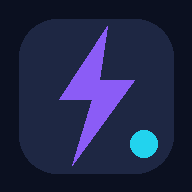

- 預估時間
- 完整步驟
- 今日份量
次數動作完成後手動確認；計時與休息會自動銜接。

雷爪獅訓練和韻東一起，穩穩進步。檢查離線狀態次數動作完成後手動確認；計時與休息會自動銜接。
還沒有痠痛回報。完成訓練後，隔天再回來記一下。
訓練紀錄與隔天的恢復回報。
紀錄只存在這個瀏覽器。清除網站資料或換裝置不會自動保留；請定期匯出。
提醒會隨暖身、動作、休息與完成狀態切換。語音使用裝置內建中文聲音。
可選擇自己的圖片。只保存在本機，不會上傳到 GitHub。
正在準備離線資源。
第一次開始訓練前，先測試聲音。iPhone 不支援網頁震動；靜音、系統設定及背景執行也可能限制聲音。螢幕常亮是否生效會顯示在訓練頁。
開始前回報目前痠痛，會套用到今天選的訓練。無痠維持原份量；微痠把工作秒數／次數減至約 80%；明顯痠減至約 60%，每個動作最多一組，建議優先休息；疼痛則停止開課。暖身、休息與收操不減量。
這是保守的 App 規則，不是經臨床驗證的個人處方，也不會因為無痠痛就加重。訓練後的當下感受與隔天 DOMS 分開記錄。嚴重、持續疼痛或明顯腫脹應尋求醫療評估。
參考：Cleveland Clinic：DOMS。v3 延續 v2 的三套訓練與 App 圖示。
今天的感覺先記下；隔天再到紀錄回報痠痛。